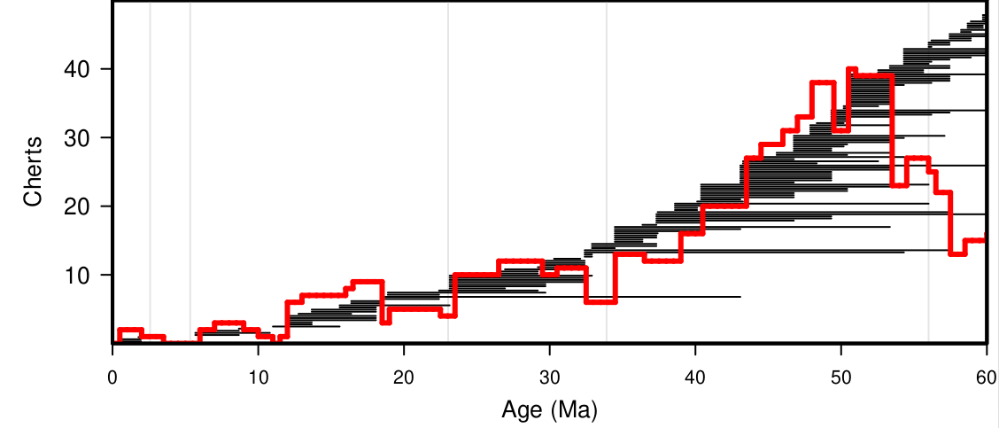

I thought I would close that series on recent/future papers with the ones that never got written, never got submitted and probably never will. As you may have noticed reading this blog, I have been trying to provide a very naive and frank approach to my corner of science, so I thought I should embraced that fully and head on.
I think there are two categories of such papers: the one that are part of my global work themes that were never finished by lack of time or funding or because there was an issue with them that I couldn't solve and the ones based on a whim, a wild guess of feasability, usually as a "sunday" collaboration with a friend or colleague (those are the fun ones I wish I could have gone through with).
The first category:
- First venture in silicon isotopes: in Niigata in 2017 at the InterRad conference, I presented on our plans to do species-specific silicon isotopes analysis on the same material that Guillaume Fontorbe used in his thesis (where the analysis was done on bulk radiolarians), in collaboration with him naturally. We collected the specimens (our technician Sylvia and me) and sent them to be analyzed but a mishap in the analyzing lab caused the results to be spurious (I think the issue is that the specimens didn t dissolved fully before the analysis was done or something like this) thus wasting the specimens. Given how long it took to collect them to begin with we unfortunately never had the time to recollect them.
- Update on Muttoni & Kent: in 2007 Muttoni & Kent published an estimate on the amount of cherts deposited through the Cenozoic and showed that the bulk of them deposited in the early Eocene (to simplify extremely their foundational paper). I thought it needed to be updated: a lot more holes have been drilled since their compilation, our age models estimates are significantly better, some of the data in the compilation looked like mistake to me, etc. When I started redoing the compilation I noticed a lot of complications (a lot of drill cores described chert debris or just small chunk of cherts in some section: are these to be accounted for?) making the endeavour significantly more complex than I previously thought. It would be a nice complement to the work we did with Cecile though.
- The Cenozoic plankton diversity paper I mentioned a couple of times on this very blog. I had the data, I made the analysis, I even started writing that one but then I got bogged down in two questions I kept asking myself: what is the actual hypothesis I am trying to test? and are the statistical tests I am using to test that hypothesis sufficient? Once I'll have a clear answer on both questions I might finish that paper. Unfortunately since then, a couple of papers were published by colleagues which overlaps significantly with the original idea of that paper so maybe not. You can already see the preliminary analysis I made for it in the presentation I made for EGU in 2020:
- And while I am at it: a bunch of papers that could very much still be, one day, if I have the time, though it seems unlikely:
- A monograph on Carpocanidae: for years, when I had time, I went thought the collections we had at the museum (in particular the Micropaleontology Reference Center), took a random slides of various geographic areas and various time intervals, and took pictures of everything on it that could be considered as a carpocanid (a group very much ignored by most radiolarian specialists on the reasonable ground that their species-level taxonomy is hellish). The idea was to have enough specimens to figure out their taxonomy starting from scratch, and then try to figure out which of the names already published are valid and sort all that mess; and maybe try to reconstruct their evolutionary history if I was exhaustive enough. Given the group is not that diverse (in the Southern Ocean, in the Neogene, there are only 9 species of Carpocaniidae sensu lato for instance), it seemed well constrained and feasible. Well it turns out 1000+ specimens are still not enough to understand fully the group... I haven't given up on that but realistically it is going to be tough to be exhaustive.
- The description of (I think) a Miocene parmales: years ago, I found a very tiny (ca. 1µm) little bugger on a slide, which had a symmetry and appendages similar to what is known in Parmales (i. e. the sister-group of diatoms). But to be able to describe it fully I would need to find another specimen, isolate it, and image it in an SEM. The odds of me finding one using a stereomicroscope to be able to actually pick it and mount it seems extremely low though. I could try to publish it based on the light microscopy photograph I have but it seems suboptimal.
- A thinkpiece on reproducibility in (bio)stratigraphy: i already wrote down some of my thoughts on the subject here.
- A paper on geometric morphometry applied to lophophaenid classification: a crazy idea I had, I just want to show it's possible. I have the material, the scripts, everything, I just need the courage to do it.
- Paleobiology meta-analysis: I have been wondering, since the reproducibility crisis broke out in various branches of science, if paleobiology was the next to come. Are the patterns of correlation between diversity and climate in particular real or did we unintentionally do some p-hacking (by lack of robust statistical training) that led to those conclusions? It is something that could be tested, using a meta-analysis of the literature and p-curves. Now I just need six months with nothing else to do to make that analysis, which seems unlikely...

This is what it already looks like just by updating the GPTS on which the data is presented to the one from 2012.
The second category:
- The Cretaceous pollen database: yes most of the papers I was planning to write in collaboration with a colleague from another side of paleontology were in fact on paleobotany (which makes sense given I shared an office with a paleobotanist for years). That first one is something I worked on quite a lot ca. 2015 (i. e. in-between two of my contracts). The idea was to make a database of pollen occurences in Cretaceous sediments, in order to improve their stratigraphy. It seemed simple on paper but then I quickly realized that the taxonomy of those pollens is messed up, and that most papers presenting useable data (i. e. this species is present in this sample which is at this depth/height on this site) were not giving the basionym or the authors of the species they discussed, and tended to put them in whatever genus they felt like at the time, making them untraceable and uncomparable with other compilations. Add to this that most of the taxonomical papers describing those species are in now defunct or otherwise inaccessible journals/books and it becomes a bit nightmarish to work with and not worth more time. I still have a database, which contains something like 44k occurrences in ca. 5k samples. If someone is interested, it's available.
- Leaf venation algorithm: the algorithm to reconstruct a map of leaves venations and classify was made, but I haven't heard about it since then. It happens, we all get busy :)
- An evolutionary simulation to test how niche partitioning with a diversity niche cap would have affected our ability to reconstruct ancestral niche of a clade: basically, what if speciation rate was dependant on the habitat/ecology of a (plant) taxon and extinction rate dependant on the habitat size (i. e. competition being proportional to the size of the niche)? Would it affect the sampled diversity and thus would reconstruction of ancestral habitat be biased toward high speciation rate/large habitat size groups? Anyway, we did a bunch of simulation but frankly a doubt linger on whether we took everything into consideration on that one.